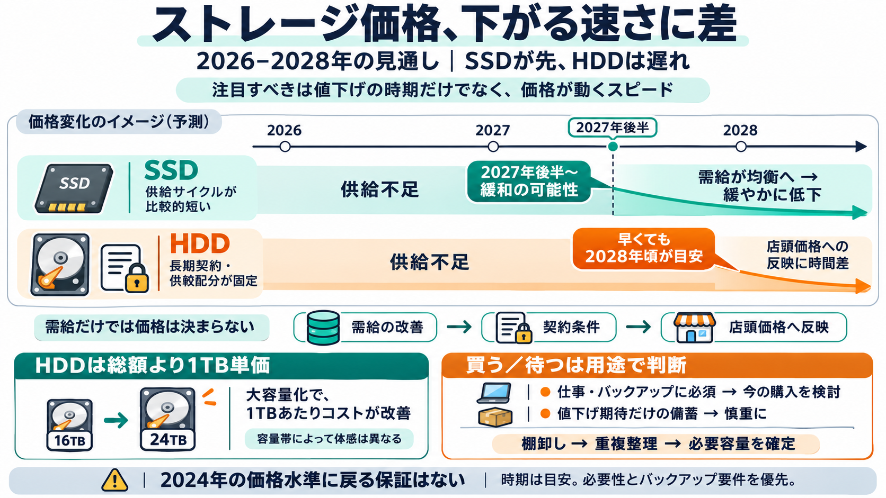

サンディスクが1,000元を突破、マイクロンは最高値を更新：メモリチップ値上げのロジックが現実化を加速
さらに、ウェハーファブの建設サイクルは約5年に及ぶため、海外の主要メモリーメーカーによる2026年予定の拡張プロジェクトはわずかであり、大半の新設能力は2027年後半まで稼働しない。したがって、DRAMとNANDの需給ギャップは2026年と…

さらに、ウェハーファブの建設サイクルは約5年に及ぶため、海外の主要メモリーメーカーによる2026年予定の拡張プロジェクトはわずかであり、大半の新設能力は2027年後半まで稼働しない。したがって、DRAMとNANDの需給ギャップは2026年と…
AI生成要約 TradingKey — 米投資銀行ウェドブッシュの最新レポートによると、世界的なAIインフラ構築の爆発的な成長がメモリチップ市場の需給不均衡を引き起こしている。2026年上半期、DRAMおよびNAND価格は「3桁台」の上昇…
世界のNANDメーカーが生産能力を高利益率製品へとシフトさせていることから、供給側の論理も価格を支えている。2027年以降まで新規生産能力の稼働が見込まれない中、短期的には実質的な供給弾力性は限定的であり、NANDの大口注文価格は高水準で推…
世界のNANDメーカーが生産能力を高利益率製品へとシフトさせていることから、供給側の論理も価格を支えている。2027年以降まで新規生産能力の稼働が見込まれない中、短期的には実質的な供給弾力性は限定的であり、NANDの大口注文価格は高水準で推…
# WD ID: KGtHvKDNJlDv Website: www.westerndigital.com Legal name: Western Digital Technologies, Inc. Headquarters: San J…